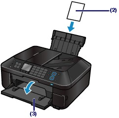
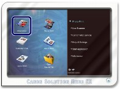
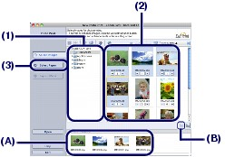
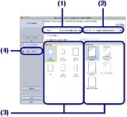
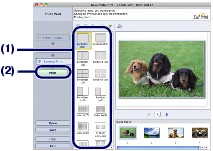

Print image data saved on your computer by using Easy-PhotoPrint EX supplied with the machine.
This section describes the procedure to print borderless photos on 4" x 6" / 10 x 15 cm photo paper.
For details on Easy-PhotoPrint EX, refer to the on-screen manual: Advanced Guide.
 Note Note
|
Prepare for printing.
(1) Make sure that the machine is turned on.
See Operation Panel.
(2) Load paper.
See Loading Paper.
Here we load 4" x 6" / 10 x 15 cm photo paper in the Rear Tray.
| Note
|
(3) Open the Paper Output Tray gently.

Start Easy-PhotoPrint EX from Solution Menu EX.
(1) Start Solution Menu EX.
See Solution Menu EX.
 Click Here: Solution Menu EX Click Here: Solution Menu EX |
(2) Click  (Photo Print) in the Photo Print menu.
(Photo Print) in the Photo Print menu.
Easy-PhotoPrint EX will be started, and the operation screen of Photo Print will appear.
| Note
|

Select a photo to print.
(1) Select the folder in which images are saved.
(2) Click the image to print.
The number of copies appears as "1", and the image you selected appears in the selected image area (A). You can select two or more images at the same time.
| Note
For details, refer to the on-screen manual: Advanced Guide.
|
(3) Click Select Paper.

Select the loaded paper.
(1) Make sure that your machine's name is selected in Printer.
(2) Make sure that Automatically Select is selected in Paper Source.
| Note
|
(3) Select the size and type of the loaded paper in Paper Size and Media Type.
Here we select 4"x6" 10x15cm in Paper Size and the type of the loaded photo paper in Media Type.
| Note
If you select the wrong page size or media type, the machine may feed paper from the wrong paper source or may not print with the proper print quality. |
(4) Click Layout/Print.

Select a layout and start printing.
(1) Select the layout of the photo.
Here we select Borderless (full).
The preview will appear in the selected layout for confirmation of the required print result.
| Note
For details on the operation, refer to the on-screen manual: Advanced Guide. |
(2) Click Print.

| Note
To temporarily stop a job in progress, click Hold. To temporarily stop all the jobs in the list, click Pause Printer (or Stop Jobs). After canceling the print job, blank sheets of paper may be ejected. |